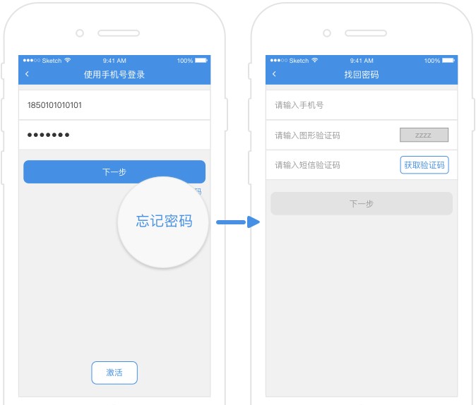
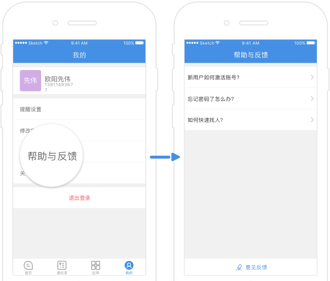

美办1.0.3版本新功能介绍
-
1、新增找回密码，修改密码功能。

账号安全体制建设，可通过手机号码验证，轻松找回并重置登陆密码，充分保障用户信息安全，放心使用。
-
2、新增帮助中心模块。
帮助中心，这里有常见的问题解答，还有意见反馈入口。有问题，再也不担心无处询问了。
-
3、账号互踢功能。
移动端安全体制建设，同一个账号只能在一个移动终端登陆哦，充分保证您的信息安全。
-
4、新增“常用联系人及常用部门”功能。
通过简便的操作，设置您的常用联系人或部门信息，可以更加快速帮您找到您亟待沟通的人哦。